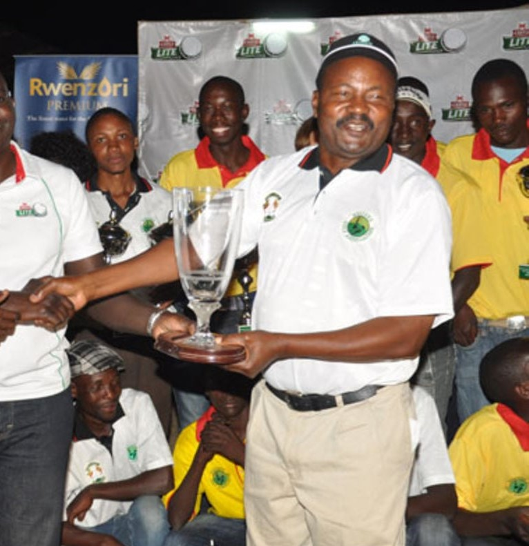
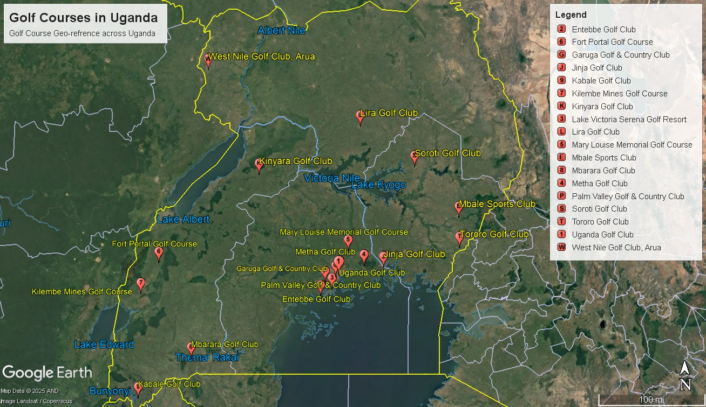
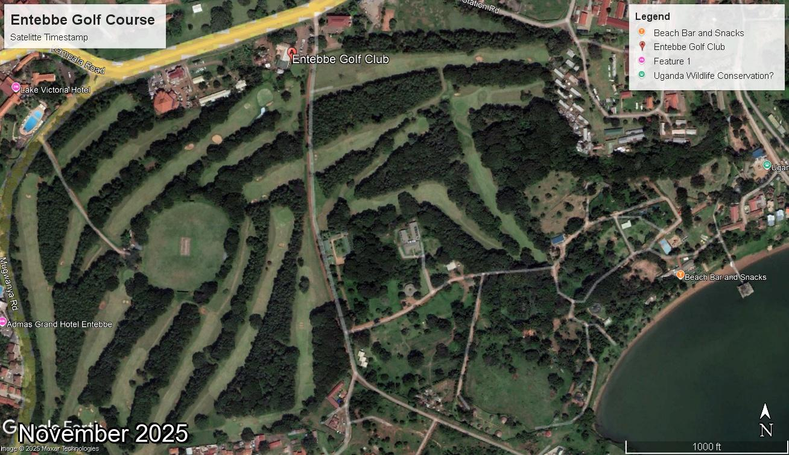

Centenary Edition
The History of
Golf in Uganda
A digital chronicle of resilience — from tsetse hazards to restoration and revival. Curated by Dr. George Bagambisa.

Featured Stories
Swipe to the Right→
“
Foreword
Golf Coverage Map

Satellite Imagery

20 Images (2009 - 2025)